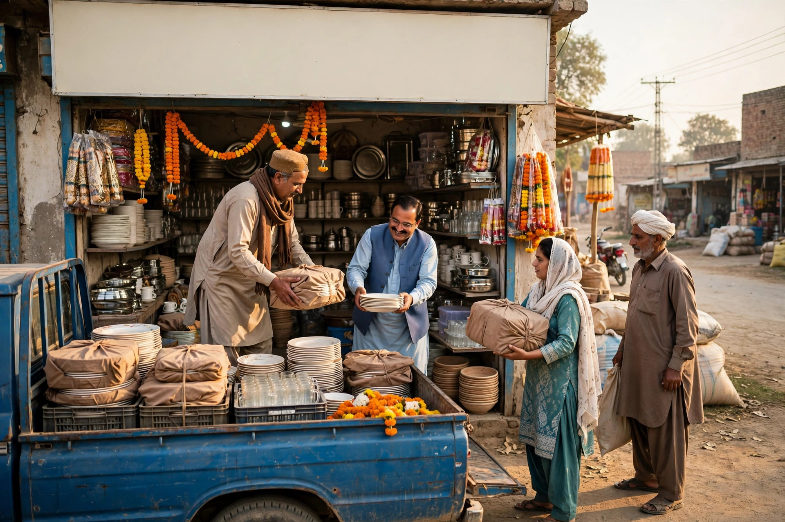

Stand in Chobara bazaar on a busy day and a large share of the shoppers will have travelled in from surrounding villages. The town functions as a market centre for a much bigger population than its own streets suggest. For a local business, that wider circle is the real market, and reaching it online is one of the most practical growth opportunities available.
Travelling customers behave differently from townspeople. They plan more, compare more carefully and often phone ahead. This article explains how to serve that behaviour honestly. Guidance for the full setup is on our SEO services for Chobara page. Note the same honesty principle in reverse: Zaheer Seo Expert is based in Layyah and serves Chobara businesses from there, with no office in Chobara. Work is done online and by phone, so distance is not a barrier, and we say so plainly, just as your business should about its own location.
How Village Customers Search Differently
A customer inside Chobara may search with near me and walk over. A customer in a village first decides whether the trip is worthwhile. The searches reflect that: the service or product, often the town name Chobara added deliberately, and practical checks that follow, such as the phone number, opening hours and directions. Some search the night before a planned trip, which means your information needs to be complete even when the shop is closed.
Family networks matter too. One person in a village who had a good experience in your shop becomes a recommender for neighbours. Online, reviews play the same role for people without that connection, which is why a village searcher often reads reviews more carefully than a local who already knows you.

Be Honest About Where You Are and Whom You Serve
The foundation is one accurate presence, not many invented ones. Keep a single Google Business Profile at your real Chobara address with a correct pin. On your website, describe your service area truthfully: based in Chobara, serving customers from the surrounding villages and nearby areas who visit the town or contact you by phone. If you genuinely deliver to certain areas or travel for certain services, say which and under what conditions. If you do not, do not imply that you do.
Never create extra listings or pages pretending to be located in each village. Google can suspend listings for false locations, and customers who travel expecting a local branch will not forgive the wasted trip. The honest version works: search engines understand service areas, and customers respect clarity. This is core local SEO practice for any market town business.
Travel Information That Converts Searches Into Visits
Remove every uncertainty that could stop a trip. Your contact page and profile should together provide:
- Accurate directions: a correct map pin plus a short note using a landmark travellers know, such as the main road or a well-known chowk.
- True hours: including market day patterns and any weekly closing day, updated before holidays.
- A pre-trip phone option: encourage visitors to call or message to confirm stock or booking, so a long trip is never wasted.
- What to bring: for services, list anything the customer should carry, such as documents, a faulty item or measurements, so one trip completes the job.
That last point is often the difference between a completed visit and a frustrated one. A villager who must return home for a forgotten paper rarely blames himself. He blames the business for not telling him, and he tells his village why.

Content That Speaks to the Wider Area
Your service pages can naturally acknowledge the wider market: farmers from nearby villages, families who combine a Chobara trip with several tasks, traders who supply smaller village shops. Write about real patterns you serve, in general terms, without inventing village-by-village pages stuffed with place names. One strong Chobara page that clearly welcomes and informs travelling customers outperforms a set of thin copied pages, and it reads honestly because it is honest.
Seasonal content helps as well. Before harvest-linked demand, school terms or festival shopping periods, update your photos and any service notes so a planner researching early finds current information. Our general guide to SEO for Chobara businesses covers how to keep these updates light and regular.
Reviews and Word of Mouth Across Villages
When a travelling customer leaves satisfied, a short polite request to share a Google review carries unusual value, because that review speaks directly to the next searcher in the same situation. Reviews mentioning an easy-to-find location, helpful phone guidance before the trip, or work completed in one visit answer the exact doubts village customers have. Reply to them with thanks, and mention the area they travelled from only if the reviewer did, keeping replies respectful and brief.
Offline, the same principle applies. A fair dealing in the bazaar becomes a recommendation in a village you have never visited. Online visibility simply lets that recommendation and your own clear information reach people before the trip, not only after it.
Measuring the Wider Market Without Guessing
You can learn a lot by asking one question at the counter: where have you come from today, and how did you find us. Keep a simple note for a few weeks. If callers increasingly mention Google, a village name or a review they read, your wider-area setup is working. Combine those observations with the basic view, call and direction figures in your Google profile, which often show interest from beyond the town itself. Then strengthen whatever is already bringing travellers in, rather than chasing new tricks.
Chobara will always be a town whose market is bigger than its map. Businesses that present one honest, easy-to-find, easy-to-contact presence earn the travelling customer, and that customer has been the lifeblood of this bazaar long before Google existed.
Frequently Asked Questions
Can a Chobara business appear in searches from nearby villages?
Yes. Google shows nearby relevant businesses based on distance and the search. An accurate profile, clear service area wording and good reviews help village customers find and choose you.
Should I create listings claiming branches in every village?
No. Only list real locations. Say honestly that your Chobara business serves customers from surrounding villages. Fake branches break Google rules and mislead travellers.
What information do travelling customers need most?
An accurate map pin, directions from a known landmark, true opening hours, a phone number to confirm stock or availability, and any genuine delivery or service area details.
Where is Zaheer Seo Expert based while serving Chobara?
Zaheer Seo Expert is based in Layyah and serves Chobara businesses from there. SEO work is done online and by phone, so distance is not a barrier.
Want More Customers From Google?
Call 0327 7350830 or email seozaheer14@gmail.com. Zaheer Seo Expert, Layyah - Rajan Shah Road, Rana Nagar, Chak 116 TDA, Pakistan. Open 24 hours.
Get Your SEO Strategy →